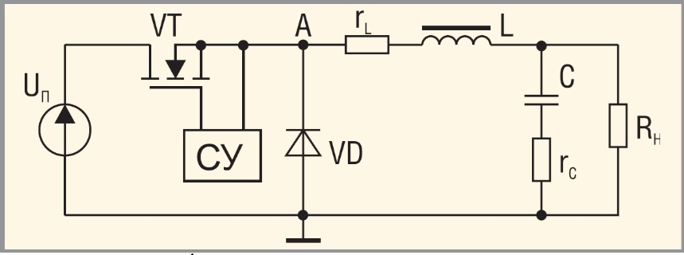

AC/DC-конвертер
Архитектура управления: DC-DC преобразователи как нервная система энергосистем.
Эволюция накопителей энергии была бы невозможна без развития систем управления и согласования. Батарея сама по себе выдает нестабильное химическое напряжение, которое падает по мере разряда. Чтобы связать этот сырой ток с чувствительной электроникой смартфона или мощным инвертором электромобиля, необходим посредник — DC-DC преобразователь (импульсный конвертер постоянного тока). Если сама батарея — это мускулы энергосистемы, то DC-DC преобразователи — её нервные узлы.
По своей сути это электронные устройства, осуществляющие дозированную импульсную передачу энергии со входа на выход с помощью управляемых (IGBT, FET транзисторы) и неуправляемых (диоды) ключей, а также накопителей — дросселей и конденсаторов.
Векторы технологического разделения
В современной схемотехнике преобразователи делятся на три ключевых топологических класса:
- Понижающие (Step-down / Buck): трансформируют высокий вольтаж в низкий. Классический пример — снижение 12-вольтового напряжения бортовой сети автомобиля до стандартных 5 В для питания микропроцессорной логики.
- Повышающие (Step-up / Boost): увеличивают выходное напряжение относительно входного. Без них не обходятся автомобильные аудиоусилители и зарядные контроллеры солнечных панелей, где низкий вольтаж генерации нужно «поднять» до уровня зарядного напряжения буферного аккумулятора.
- Универсальные (Buck-Boost): способны как повышать, так и понижать напряжение. Они незаменимы в сценариях, где входной вольтаж непрерывно колеблется (например, при глубоком разряде литий-ионной ячейки от 4,2 В до 2,5 В), а на выходе требуется строго фиксированная величина.
По архитектурному исполнению конвертеры делятся на бестрансформаторные и с гальванической развязкой. В последних входные и выходные цепи разделены обмотками трансформатора, что полностью исключает электрическую связь между ними. Такая развязка критически важна в импульсных блоках питания и медицинской аппаратуре (например, сканерах и электрокардиографах), где малейшая сетевая помеха или пробой могут стоить жизни пациенту или уничтожить прецизионную технику.
Функциональный базис и сферы экспансии
Современный DC-DC преобразователь решает одновременно четыре фундаментальные задачи:
- Коррекция: прецизионная подгонка вольтажа под жесткие требования конкретного чипа или привода.
- Стабилизация: удержание эталонного напряжения при сильных просадках или скачках на входе.
- Фильтрация: нейтрализация высокочастотных помех за счет гальванического разделения сред.
- Защита: мгновенная отсечка линии при коротких замыканиях, тепловой перегрузке или опасных токах.
Сегодня эти компоненты масштабировались от микроскопических чипов внутри смартфонов до промышленных модулей на DIN-рейку и контроллеров плавного пуска мощностью до 800 Вт и выше. Они управляют потоками энергии в светодиодном освещении, выстраивают топологию питания бортовых систем железнодорожного и авиационного транспорта, коммутируют сигналы в телекоммуникационных вышках связи и обеспечивают балансировку токов на мегаваттных ветровых и солнечных генераторах «зеленой» энергетики. Без этой кремниевой микроэлектроники даже самая емкая батарея будущего осталась бы бесполезным химическим резервуаром.
Схемотехника DC/DC преобразователей.
Важнейшей частью электронной аппаратуры является источник питания. От его надёжности и работоспособности во многом зависит не только качество функционирования, но подчас и сама возможность работы электронного устройства. В данной статье приведён анализ принципов работы DC/DC преобразователей, широко применяемых для построения источников питания.
Современная аппаратура характеризуется достаточно высокой сложностью, и часто для питания её отдельных узлов требуются различные напряжения. В случае наличия одного источника питания для получения разных уровней необходимо использовать специальные преобразователи (регуляторы). Особенно остро проблема получения различных питающих напряжений стоит в портативной аппаратуре. Если в устройствах, питающихся от сети, можно построить блок питания с необходимыми напряжениями, то в портативных приборах, работающих от автономных источников энергии, требуемые уровни напряжений можно получить только с использованием DC/DC преобразователей. В данной статье мы рассмотрим толь ко основные типы DC/DC преобразователей, работающих в ключевом режиме, а именно регуляторы I, II и III типов. Ключевой режим работы позволяет получить достаточно высокий КПД в сравнении с линейными регуляторами. Требование получения высокого КПД особенно важно для приборов с автономными источниками энергии. Рассмотрим особенности основных типов регуляторов.
РЕГУЛяТОР I ТИПА (ПОНИЖАЮЩИЙ ПРЕОБРАЗОВАТЕЛЬ)

Согласно названию – понижающий, – данный преобразователь обеспечивает регулирование выход ного напряжения в диапазоне от нуля до величины входного напряжения (в реальности верхняя граница не сколько меньше, что связано с потерями в элементах схемы). В англоязычной литературе понижающий регулятор называется «buck converter» или «stepdown converter». Упрощённая схема регулятора I типа приведена на рисунке 1. Силовой ключ VT преобразователя (см. рис. 1) может находиться в двух состояниях: открытом – ток протекает через ключ (интервал импульса – tИ) и закрытом (интервал паузы – tП). Продолжительность интервала импульса определяется коэффициентом заполнения:
Когда транзистор VT открыт, ток от источника протекает по контуру VT–L–нагрузка, нарастая от минимального значения до максимального (см. рис. 2а). В интервале, когда VT открыт, идёт передача энергии в нагрузку и происходит накопление энергии в катушке индуктивности. При закрытии транзистора катушка индуктивности выступает в роли источника тока, передавая накопленную энергию в нагрузку по контуру L–VD–нагрузка. Выделяют два режима работы регулятора – режим непрерывных и прерывистых токов. В первом ток катушки индуктивности всегда больше нуля, а во втором существует интервал времени, в течение которого он равен нулю. Временные диаграммы для обоих режимов приведены на рисунке 2. Регулировочная характеристика регулятора I типа для режима непрерывных токов (т.е. зависимость выходного напряжения от коэффициента заполнения γ) описывается выражением [1]:
\[ U_{\text{н}} = U_{\text{п}}\gamma - I_{\text{н}}(r_{\text{VT}} + r_{\text{L}}) - U_{\text{VD}}(1 - \gamma). \]Для идеального регулятора без потерь:
\[ U_{\text{н}} = U_{\text{п}}\gamma. \]Как видно из формулы, регулировочная характеристика реального преобразователя зависит от тока нагрузки. Чем больше ток нагрузки, тембольше характеристика отклоняется от идеальной (см. рис. 3). Основные отличия режима прерывистых токов заключаются в наличии интервала времени tП, когда ток катушки индуктивности (и диода) равен нулю. Для режима прерывистых токов характерны большие пульсации тока катушки индуктивности и тока конденсатора. Регулировочная характеристика регулятора I типа в режиме прерывистых токов описывается выражением [1]:
\[ U_{\text{н}} = U_{\text{п}} \frac{2}{1 + \sqrt{1 + \frac{4K}{\gamma^2}}}, \]где К = 2L/RНT. Как видно из этого выражения, напряжение в нагрузке нелинейно зависит от коэффициента γ. Следует отметить, что режим прерывистых токов используется редко. Понижающие преобразователи проектируются так, чтобы в заданном диапазоне токов и напряжений нагрузки сохранялся режим непрерывных токов катушки индуктивности. Но, тем не менее, надо иметь в виду, что режим прерывистых токов возможен при падении тока нагрузки ниже критического значения. Для обеспечения режима непрерывных токов индуктивность L должна выбираться согласно следующему условию [1]:
\[ L \ge \frac{U_{\text{н}} \left[ 1 - \frac{U_{\text{н}}}{U_{\text{п max}}} \right] T}{\Delta I_L} . \]Различают две основные модификации схемы понижающего преобразователя – синхронный понижающий преобразователь (synchronousbuck converter) и прямоходовойпреобразователь (forward converter). В схеме синхронного преобразователя (см. рис. 4а) диод заменён МОП транзистором VT2. Так как падение напряжения на МОП транзисторе может быть меньше падения напряжения на диоде при одинаковых токах, то КПД схемы может значительно возрасти, особенно при значениях выходного напряжения, соизмеримых с падением напряжения на диоде. Другая особенность заключается в том, что синхронный преобразователь работает только в режиме непрерывных токов, что объясняется способностью МОП транзистора проводить ток в обоих направлениях (от стока к истоку и наоборот). В схеме прямоходового преобразователя (см. рис. 4б) обеспечивается гальваническая развязка входного и выходного напряжений. При открывании транзистора VT по первичной обмотке трансформатора T начинает протекать ток, наводящий во вторичной обмотке ЭДС индукции, через диод VD1 начинает течь ток, заряжающий через дроссель L конденсатор C. Таким образом, рабочим является прямой ход преобразователя, благодаря которому он и получил своё название. При закрытии транзистора VT ток через первичную обмотку начинает уменьшаться, соответственно, напряжение на вторичной обмотке приоб....